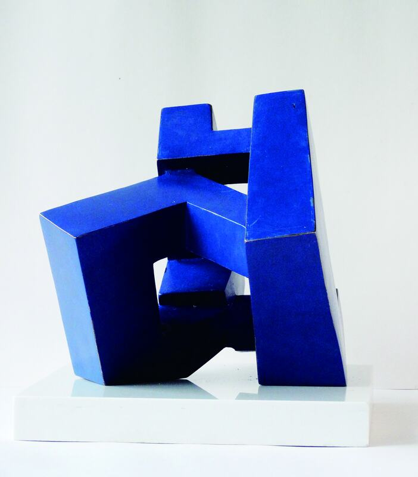
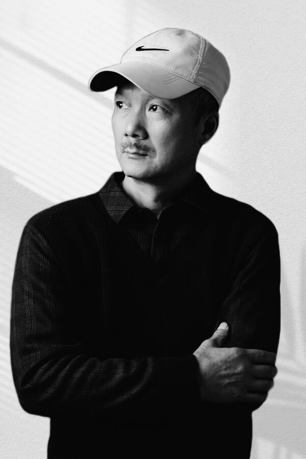

風之對話
Xikang Lai賴錫康
Artist · Sculptor · Educator藝術家・雕塑家・教育者

Body & Gesture身體與姿態
我認為舞蹈是運動的雕塑，而雕塑則是靜止的舞蹈。I think of dance as sculpture in motion, and sculpture as dance at rest. (translation)
曲伸之美（之一）
The Beauty of Curved Stretching (Part 1)
側臥的人體
Lying Figure
仲夏夜（之一）
Midsummer Night (Part 1)
Additional works 延伸作品
Figures, 2007–2019 人體 2007–2019
城市夜空的鷹
An Eagle Flying in the Night Sky of the City
天與地
Between Heaven and Earth
地平線上的好望角
Dipingxian shang de Haowangjiao
玫瑰
Meigui
Force & Equilibrium力與平衡
平衡是美的，它能把你從不安帶回到平靜。Balance is beautiful; it can bring you back from unease to calm. (translation)
平衡
Balance
春
Spring
冬·春
Dong · Chun
合力
Resultant Force
Float 水天
水天
Float (Part 1)
水天Ⅱ
Float (Part 2)
水天（之三）
Float (Part 3)
Thresholds & Space門檻與空間
From Civilized Ruins (1990) to the Gate series (2022–2025).
從《廢墟》（1990）到「門系列」（2022–2025）。
廢墟 Civilized Ruins
1990
2022
廢墟—和平之門（門系列之一）
意志之門（門系列之二）
The Gate of Spirit
覺醒之門（門系列之三手稿）
The Gate of Awakening (Draft)
覺醒之門（門系列之三）
The Gate of Awakening
混沌之門（門系列之四）
The Gate of Chaos
Public Works & Archive公共藝術與文獻
Monuments and reliefs in China and South Korea, 2000–2018.
中國與韓國的紀念像與浮雕，2000–2018。
蘭桂騰芳
Additional works 延伸作品
Historical figures 歷史人物
安重根
An Jung-geun
孫中山
Sun Yat-sen
軍歌嘹亮——鄭律成
Junge Liaoliang — Zheng Lücheng
祖沖之
Zu Chongzhi
Relief 浮雕
為了和平
For Peace
About 關於

Xikang Lai is a sculptor and educator based in Guangzhou. He graduated in sculpture from Guangzhou Academy of Fine Arts in 1990 and is a member of the Guangdong Artists Association. His commissions stand in China, Hong Kong and South Korea.賴錫康，雕塑家、教育者，居於廣州。1990年畢業於廣州美術學院雕塑系，廣東省美術家協會會員。作品見於中國內地、香港及韓國。
"My practice reconfigures figurative traditions through material metamorphosis — from bronze patinas to jade translucence. […] observing the world as Adam Zagajewski urged: through material eyes."
Selected history 經歷選錄
- 1990Guangzhou廣州Guangzhou Academy of Fine Arts · B.A. in Sculpture; Civilized Ruins, now in the Academy's collection廣州美術學院・雕塑系學士；《廢墟》現藏學院
- 1990–2002Guangzhou廣州Guangzhou Urban Construction Vocational High School · Teacher廣州城市建設高級職業中學・一級教師
- From 2002Guangzhou廣州Guangzhou Academy of Fine Arts, Lingnan Fine Arts College, Guangdong Commercial College · Visiting lecturer and professor2002年起・廣州美術學院、嶺南藝術學院、廣東商學院客座講師及教授
- 2006Gwangju, South Korea韓國光州Gwangju Municipal Office · Cultural Exchange Award光州市政府・文化交流獎
- 2006–07Guangdong廣東Dance Study and Ballet magazines · Cover sculptures《舞蹈研究》《芭蕾》・封面雕塑
- 2008Hong Kong香港Hong Kong Wetland Park · Commissioned sculpture series香港濕地公園・系列雕塑
- 2010Guangzhou廣州16th Asian Games · Balance, Excellence Award for sculpture design第十六屆亞洲運動會・《平衡》雕塑設計優秀獎
- 2011Harbin哈爾濱An Jung-geun Memorial Hall · For Peace, bronze relief安重根紀念館・《為了和平》青銅浮雕
- 2013Guangzhou廣州Asia Sculpture Annual Exhibition · Spring亞洲雕塑年度展覽・《春》
- 2016Xinyi, Guangdong廣東信宜Xinyi Middle School · Zu Chongzhi信宜中學・《祖沖之》
- 2017China中國Huayi International Autumn Auction · Resultant Force, sold華藝國際秋季拍賣會・《合力》成交
- 2018Taichung臺中Cross-Strait Sculpture Exhibition · Resultant Force, Float兩岸雕塑展・《合力》《水天》
- 2018Shanghai上海International Sculpture Forum · Exhibitor參展
- 2018Guangzhou廣州白雲區Baiyun District · 《蘭桂騰芳》, public sculpture公共雕塑
- 2025Taichung臺中International Invitational Exhibition · Resultant Force臺中國際邀請展・《合力》
Publications: 20th Century Chinese Sculpture (Tianjin, 2012) · Public Art Masters (Beijing, 2016) · 70 Years of Chinese Art (Hebei, 2019). Also exhibited: Asian Sculpture Exhibition, Seoul.
Full statement and critical perspectives 自述與評論
"My practice reconfigures figurative traditions through material metamorphosis — from bronze patinas to jade translucence. Technical precision in anatomical rendering (§ casting, § carving) distills essential forms. This persistent excavation of transcultural beauty endures despite the fractures of modernity — observing the world as Adam Zagajewski urged: through material eyes."
Pan Jiajun | Curator, Guangdong Artists
"Lai's material syntax:
1. VOLUMETRIC RIGOR - Anatomical precision in bronze/stone
2. DYNAMIC TENSION - Rhythmic density/void interplay
3. SURFACE ALCHEMY - Patina § carving § inlay transformations"
Li Gongming | Professor, GAFA
"Lai crystallizes grace through:
• CONTRAPUNTAL VOLUMES - Flexion/extension in spatial dialogue
• TACTILE INTELLIGENCE - Bronze/wood resonance engineering
• MATERIAL POETICS - Surfaces activating subconscious reading"